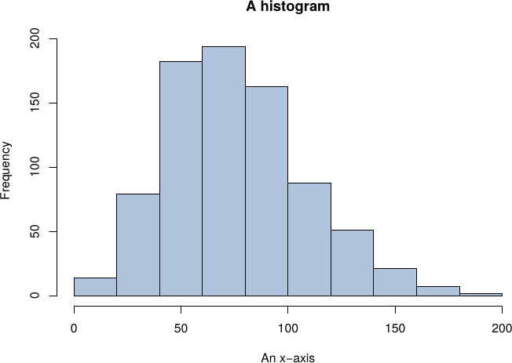

Theme Customisation
Dark
Pastel
Light
Font size (
100%
)
Sample Course
Course Material
Figures and Embedding
Toggle customisations panel
Download Chapter as PDF
A chapter title
2.1 Figures
2.1.1 Graphics

Figure
2.1
A histogram originally provided in .pdf format
2.1.2 Tikz
Figure
2.2
A complete graph, drawn with tikz.
2.2 Embedding
2.2.1 Numbas
2.2.2 Vimeo
2.2.3 Youtube